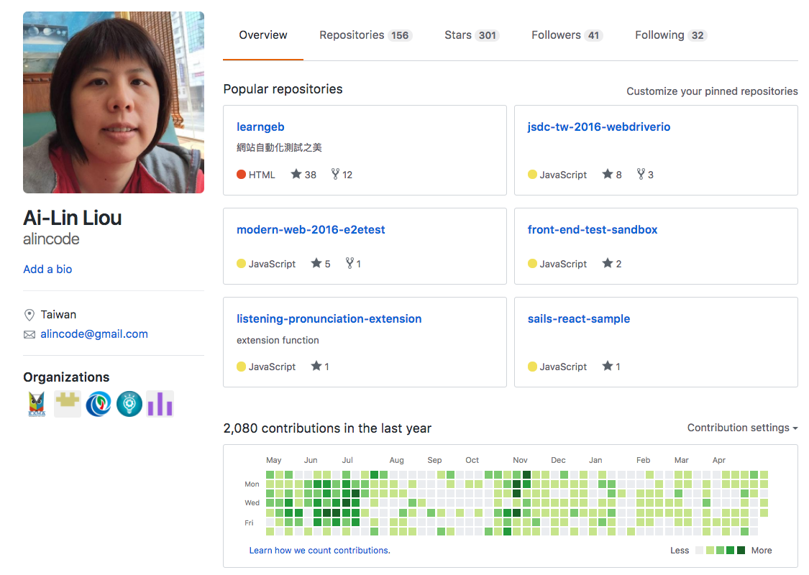
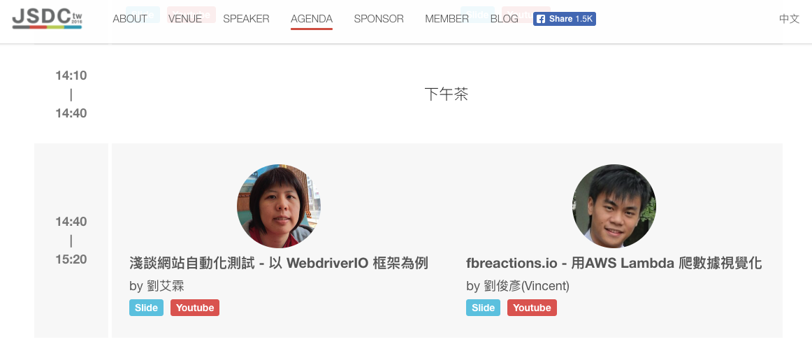
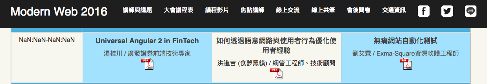

關於我(Alin)

創科資訊 - 軟體技術顧問
具有實務上的 Web Full Stack 開發，及協助企業導入網站自動化測試實務經驗，熟悉 Java 及 Javascript 開發。是全端工程師、後端工程師、測試開發工程師、企業內訓講師，具有 8 年軟體開發相關資歷，目前從事企業技術教學與顧問。
擅長領域
- 網頁開發 (前端 + 後端 = 全端)
- 自動化測試開發
- 電子商務網站開發
- 第三方服務整合
- 系統分析 / 系統設計
教學 / 講師經歷
- 2016 Trunk studio - 講者 WebdriverIO 起手式
- 2017 企業內訓講師 / 大專院校業師 / 社群講者

